Tác Động của AI
Lên Thị Trường Việc Làm
Phân tích toàn diện bộ dữ liệu tuyển dụng 2010–2025 — từ xu hướng thị trường, phân phối kỹ năng, rủi ro tự động hóa đến insight chiến lược nhân sự.
Tổng Quan Thị Trường
Bức tranh tổng thể về số tin tuyển dụng theo năm, phân bổ theo ngành và quốc gia, cùng cơ cấu cấp độ kinh nghiệm theo khu vực địa lý.
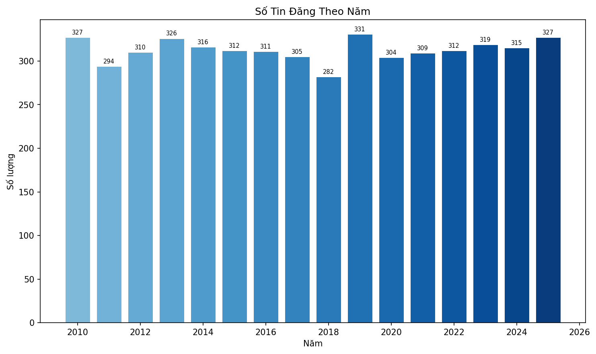
Phân Tích Đơn Biến
Phân phối từng biến độc lập: cường độ AI, rủi ro tự động hóa, giai đoạn áp dụng AI và mức lương. Giúp hiểu đặc điểm thống kê của từng chỉ số trước khi đặt vào bối cảnh tổng thể.
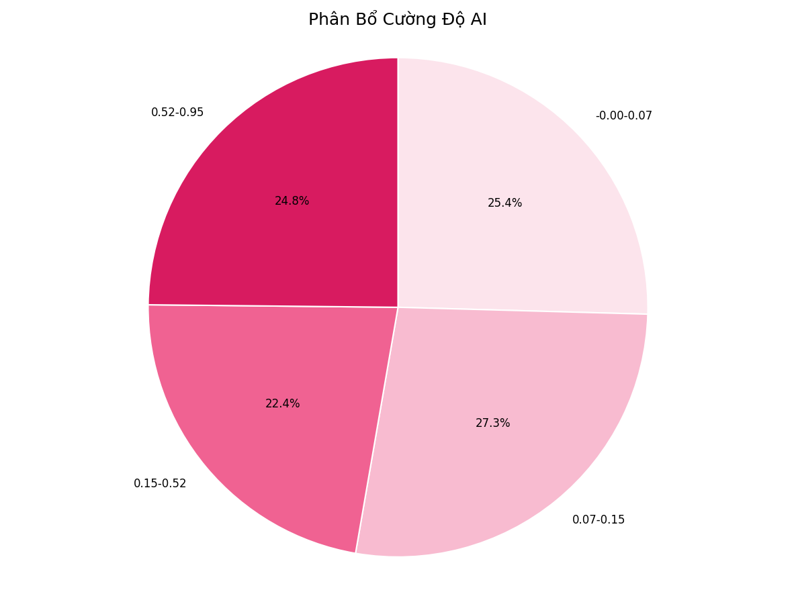
Phân Tích Song Biến
Khai thác mối quan hệ giữa các cặp biến: lương theo cấp độ kinh nghiệm, top ngành có lương cao và phân bổ rủi ro theo ngành nghề.
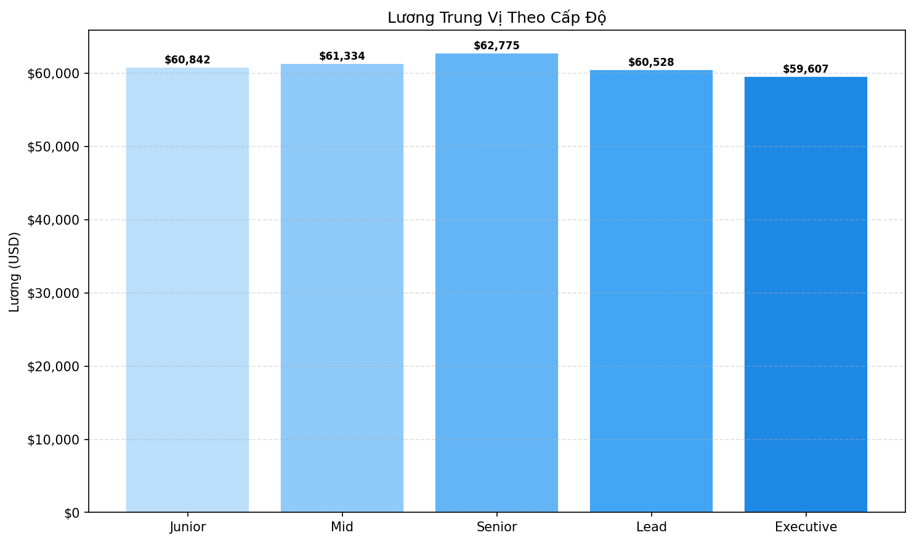
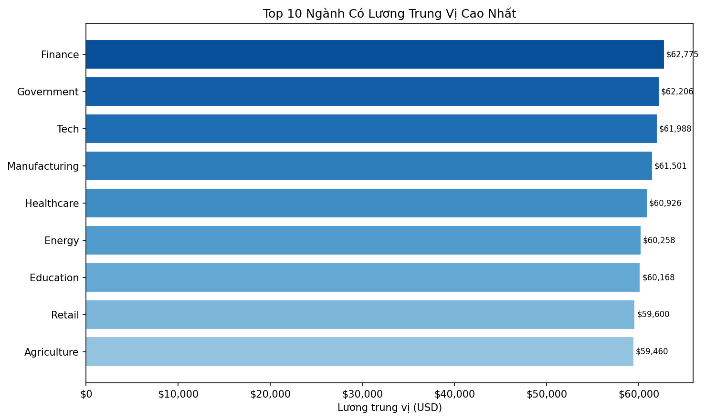
Xu Hướng Theo Thời Gian
Theo dõi diễn biến dài hạn qua 15 năm: mức độ đề cập AI, biến động lương, xu hướng rủi ro tự động hóa và nhu cầu reskilling.
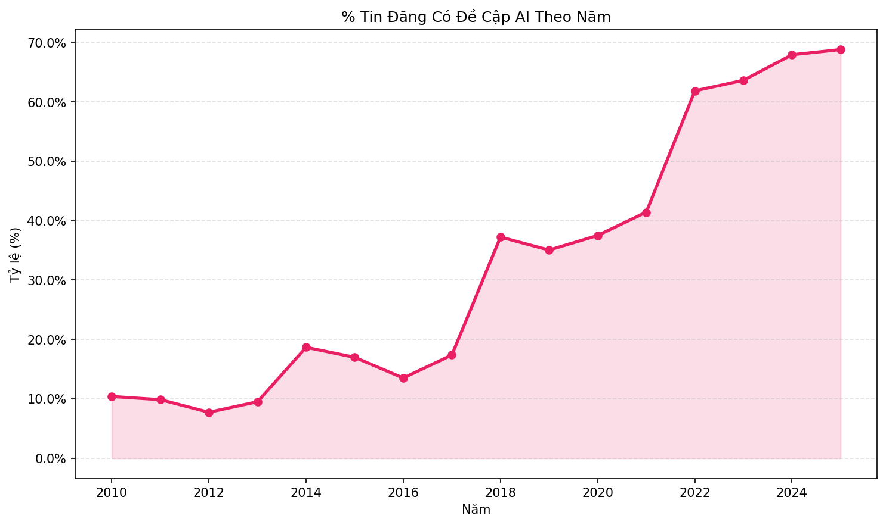
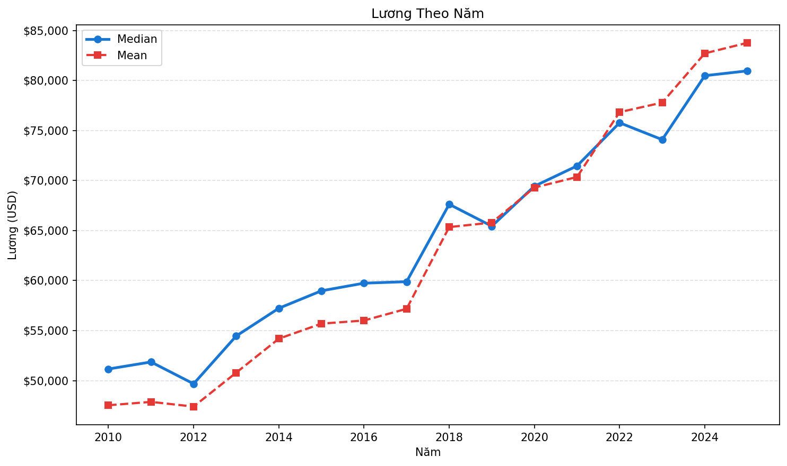
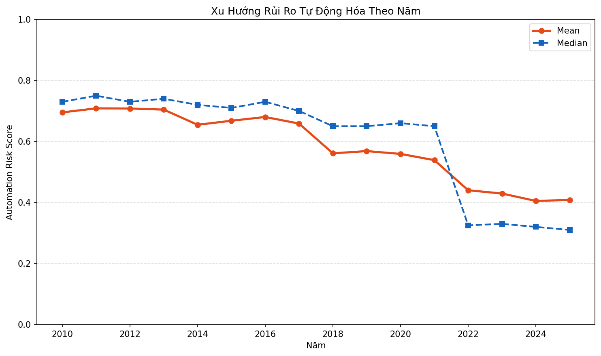
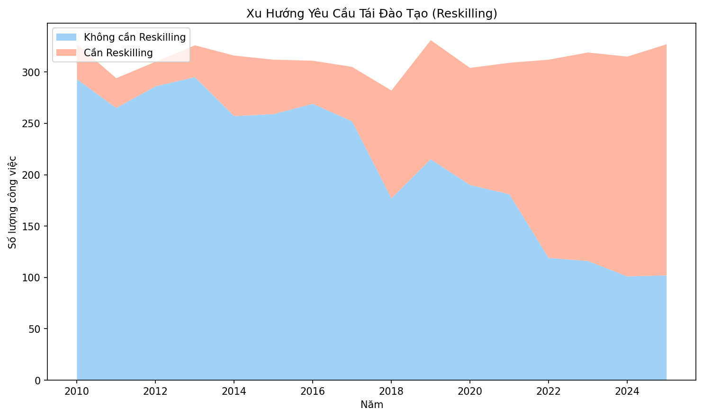
Phân Tích Kỹ Năng & Văn Bản
Trích xuất và trực quan hóa kỹ năng cốt lõi, từ khóa AI nổi bật, tỷ lệ reskilling và phân bổ rủi ro dịch chuyển việc làm theo ngành nghề.
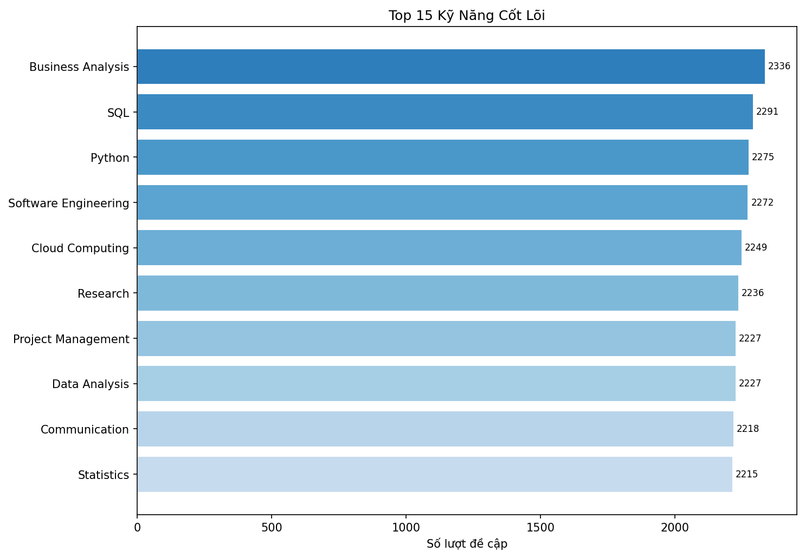
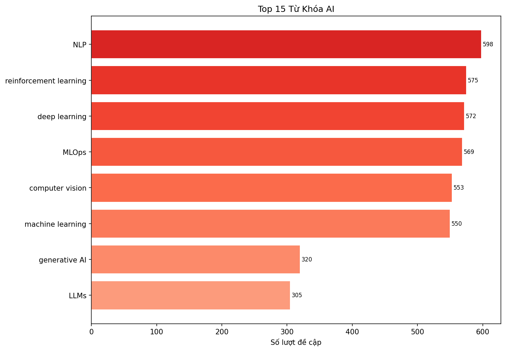
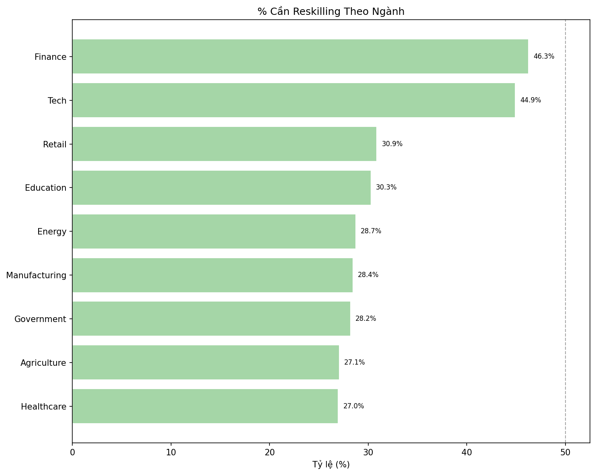
Phân Tích Chiến Lược
Tổng hợp insight chiến lược về mối liên hệ giữa giai đoạn ứng dụng AI và rủi ro dịch chuyển, phục vụ ra quyết định nhân sự và phát triển tổ chức.
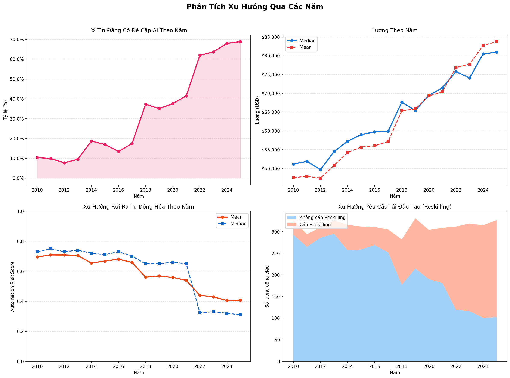
Phân Bổ Toàn Cầu (Tương Tác)
Bản đồ nhiệt thế giới tương tác thể hiện mật độ tin tuyển dụng và mức lương trung vị theo quốc gia. Di chuột lên từng quốc gia để xem chi tiết.